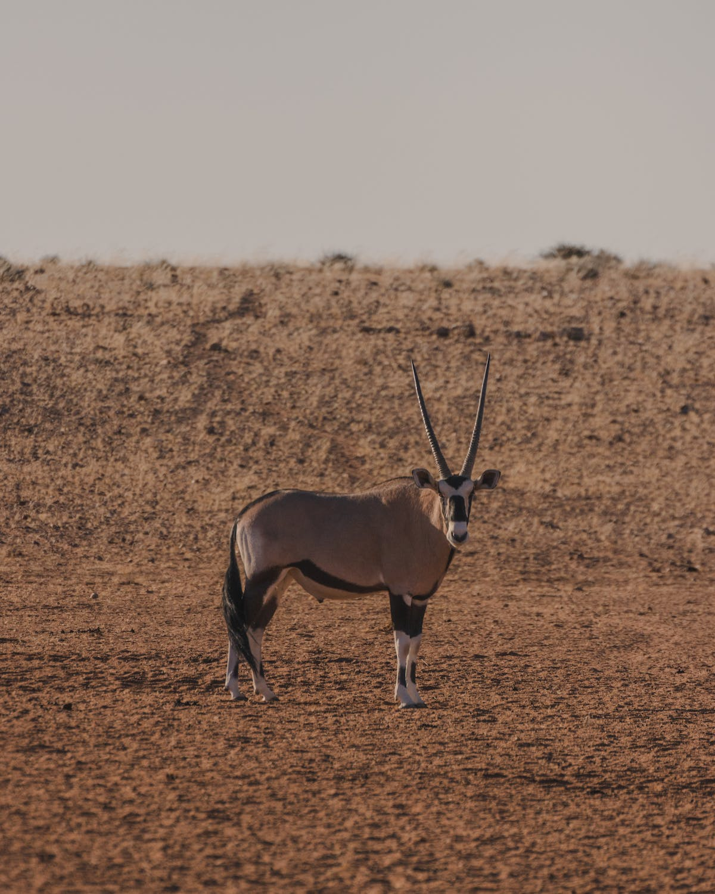
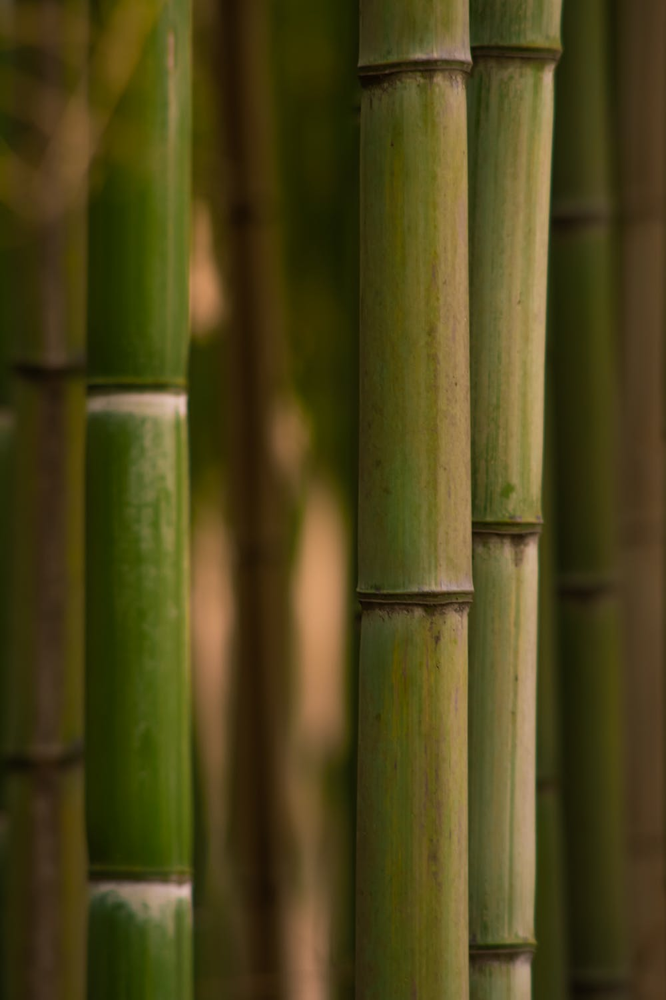

Greeendy
Bussiness
Greeendy（グリディ）は、 「東アフリカの緑の恵みから、日々の生活に彩を」をコンセプトとし、東アフリカから生まれる緑からイノベーションを通じて、雇用創出と人々のエンパワメントをすることをミッションとしています。 気候変動の影響を受け、これから農作物にさらなる光を当てること、アフリカの人口増加とさらなるマーケット拡大を目的とし、日本とアフリカのみならず、アフリカから生まれる緑から 社会に変革を起こしていきます。


Mission
「東アフリカの緑の恵みから、サスティナブルな自立型社会の創造」
東アフリカでの雇用創出を最大目標とし、目標達成の方法として
日本の技術が高い"竹"と第一次産業の成長を目的とし、「人にも環境にも優しい竹スイーツ」を考案しています。
今の私達にできること、したいことはポジティブな目線で東アフリカを見つめ、彼らと働くこと。
地元長崎から世界に通ずるスイーツブランドを提供していきます。
”Environmental”(環境）

“Empowerment“（課題解決）
“Enthusiam”（情熱）

- 社名: 一般社団法人Greeendy
- 設立: 2023年2月7日
- 代表理事: 柳原沙紀
- 共同創設者：本多なお
About
私達は東アフリカへ留学した際に大干ばつによる
「環境問題」、「食糧危機」、「雇用問題」があることを知り、それらの解決の糸口の一つとして、ウガンダ政府が進める竹産業に着目しました。私達は長崎から日本の素晴らしい竹の技術で持続可能なビジネスを共創しようとしています。
クラウドファンディング開始！
第一弾【長崎でのワークショップイベント開催へ】
イベント運営費10万円.材料費5万円.試作等準備費3万円.その他2万円
第二弾【竹スイーツ考案へ】
パティシエコンサル料3万円.その他2万円
第三弾【アフリカに竹スイーツ工場建設へ】
スイーツまでの調理器具一式10万円.工場設立費30万円.渡航費(専門家含め4名)100万円
長崎限定イベント!!!
竹で作ったちぎりパンを作ろう！
3/18 11:00~: 13:00~
アフリカ飯体験 食す×話す
3/18 16:00~18:00